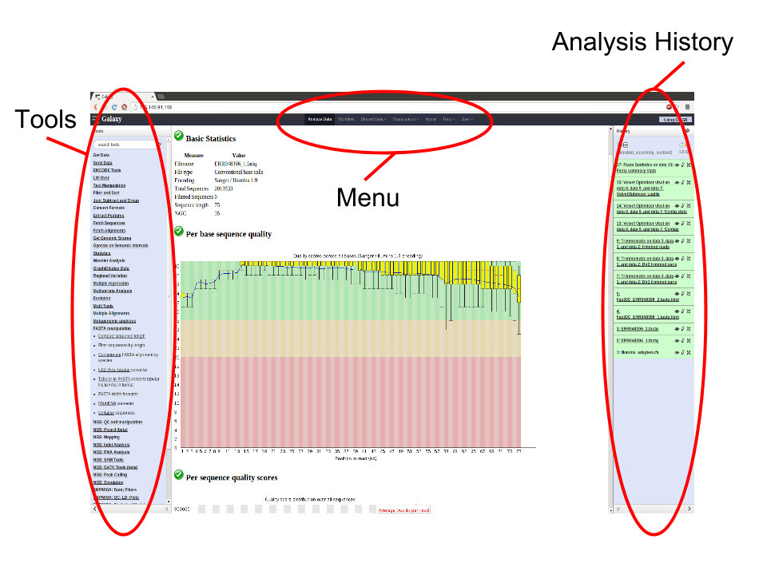
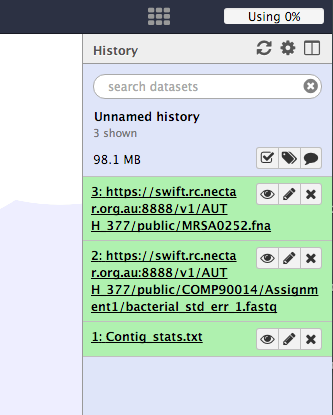

Written and maintained by Simon Gladman - VLSCI
Galaxy is a web based analysis and workflow platform designed for biologists to analyse their own data. It comes with most of the popular bioinformatics tools already installed and ready for use. There are many Galaxy servers around the world and some are tailored with specific toolsets and reference data for analysis of human genomics, microbial genomics, proteomics etc.
There are some introductory slides available here.
Basically, the Galaxy interface is separated into 3 parts. The tool list on the left, the viewing pane in the middle and the analysis and data history on the right. We will be looking at all 3 parts in this tutorial.

This workshop/tutorial will familiarize you with the Galaxy interface. It will cover the following topics:
At the end of this tutorial you should:
The purpose of this section is to get you to log in to the server..
Go to the ip address of your GVL Galaxy server (or if you don’t have one, open Galaxy-Tut server) in Firefox or Chrome (your choice) - Please don’t use Internet Explorer or Safari.
If you have previously registered on this server just log in:
If you haven’t registered on this server, you’ll need to now.
There are 2 main ways to get your data into Galaxy. We will use each of these methods for 3 files and then work use those 3 files for the rest of the workshop.
Start a new history for this workshop. To do this:
It is important to note that Galaxy has the concept of "File Type" built in. This means that each file stored needs to have its type described to Galaxy as it is being made available. Examples of file types are: text, fasta, fastq, vcf, GFF, Genbank, tabular etc.
We will tell Galaxy what type of file each one is as we upload it.
With this method you can get most of the files on your own computer into Galaxy. (there is a size limit)
Download the following file to your computer: https://swift.rc.nectar.org.au:8888/v1/AUTH_377/public/galaxy101/Contig_stats.txt.gz
The file will now upload to your current history.
If a file exists on a web resource somewhere and you know its URL (Unique resource location - a web address) you can directly load it into Galaxy.
From the tool panel, click on Get Data -> Upload File
Note that Galaxy is smart enough to recognize that this is a compressed file and so it will uncompress it as it loads it.
Now we are going to upload another file from the remote data source.
Repeat the above for: https://swift.rc.nectar.org.au:8888/v1/AUTH_377/public/MRSA0252.fna
Note that this file is a fasta file and not a fastqsanger file.
From the tool panel, click on Get Data -> Upload File
The DNA sequence of Staphlococcus aureus MRSA252 will be loaded into your history as a fasta file.
Your history should now look like this.

Though we aren't going to focus on the contents of these files and what they mean from a bioinformatics standpoint, here is a brief description of each one.
Contigs_stats.txt
bacterial_std_err_1.fastq.gz
MRSA0252.fna
The purpose of this section is to get you used to using the available tools in Galaxy and point out some of the more basic manipulation tools.
Firstly however, you’ll notice that two of the files have very long and confusing names. So we might want to change them. To do this we need to “edit” the file. So:
Repeat the process for the MRSA252 fasta file. Rename it to MRSA252.fna
Now that’s better. There was a lot of other functionality hidden behind that edit () icon. You can change a file’s data type, convert its format and many other things. Feel free to play around with them at a later date.
Ok, back to the tools..
The first thing we are going to do is produce a histogram of contig read coverage depths and calculate the summary statistics from the Contig_stats.txt file. To do this we need to cut out a couple of columns, remove a line and then produce a histogram. This will introduce some of the text manipulation tools.
Click on the  icon of the Contig_stats.txt file to have a look at it. Note that there are 18 columns in this file. We want column 1 and column 6. To do this:
icon of the Contig_stats.txt file to have a look at it. Note that there are 18 columns in this file. We want column 1 and column 6. To do this:
1. Cut out column 1 and column 6.
Examine the new file by clicking on it’s  icon. We now have 2 columns instead of the 18 in the original file.
icon. We now have 2 columns instead of the 18 in the original file.
2. Remove the Header lines of the new file.
Note the the new file is the same as the previous one without the header line.
3. Make a histogram.
Click on the  icon of the histogram to have a look at it. Note there are a few peaks.. Maybe these correspond to single, double and triple copy number of these contigs.
icon of the histogram to have a look at it. Note there are a few peaks.. Maybe these correspond to single, double and triple copy number of these contigs.
4. Calculate summary statistics for contig coverage depth.
You’ll note that the summary statistics tool failed and is red in the history. There was an error! If you click on the filename, and then the bug symbol, it will tell you what went wrong. (There is a missing python library.) At this point, you would normally contact your Galaxy server administrator.
This shows how to convert a fastq file to a fasta file. The tool creates a new file with the converted data.
Converter tool
This will have created a new Fasta file called FASTQ to FASTA on data 2.
This example shows how to use a tool called “barrnap” to search for rRNAs in a DNA sequence.
1. Find all of the ribosomal RNA's in a sequence
A new file called barrnap on data 3 will be produced. It is a gff3 file. (This stands for genome feature format - version 3. It is a file format for describing features contained by a DNA sequence.) Change it’s name to something more appropriate (click on the icon.) There is also a STDERR output file from this tool - just ignore this one.
Now lets say you only want the lines of the file for the 23S rRNA annotations. We can do this using a Filter tool.
2. Filter the annotations to get the 23S RNAs
Now you have a gff3 file with just the 23S annotations!
Remember how we started a new history at the beginning? If you want to see any of your old histories, click on the history menu button  at the top of the histories panel and then select “Saved Histories.” This will give you a list of all the histories you have worked on in this Galaxy server.
at the top of the histories panel and then select “Saved Histories.” This will give you a list of all the histories you have worked on in this Galaxy server.
That's it. You now know a bit about the Galaxy interface and how to load data, run tools and view their outputs. For more tutorials, see http://genome.edu.au/learn
{% endblock %} {% block modals %} {% endblock %} {% block scripts %} {% endblock %}